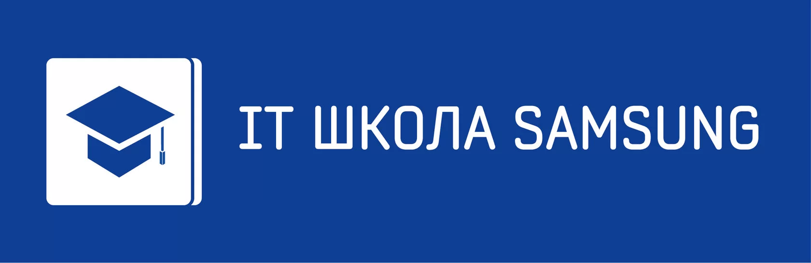

разработанный Российским Исследовательским центром Samsung,
поможет учащимся освоить фундаментальные разделы ИТ и
программирования в адаптированной для школьников форме,
получить практические навыки по разработке мобильных приложений
в идеологии промышленной индустрии «от идеи до дистрибуции».
Для кого
Программа подходит старшеклассникам, которые
- знания условных и циклических конструкций
- увлекаются ИТ-технологиями
- имеют склонность к алгоритмическому мышлению,
Программа ориентирована на учащихся старших классов (рекомендуем 9-10 класс) и колледжей (возраст до 17 лет на момент начала обучения), которые
- Бесплатный очный курс с сертифицированным преподавателем
- Выпускной проект — собственное мобильное приложение
- Возможность получить дополнительные баллы при поступлении в 19 ведущих вузов России
- Навыки сборки и программирования роботизированных устройств
- Сертификат от компании Samsung, признанного лидера в сфере IT-инноваций
- Продолжительность – 1 учебный год с сентября по май
- Занятия проходят по 4 академических часа в неделю в очном формате в группах
